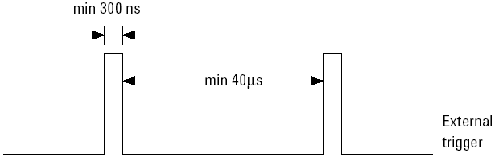
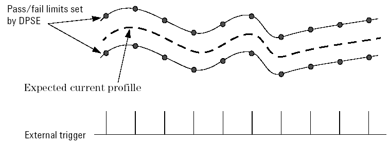

Setting Up the External Trigger
You must first make the connection from the pogo pin to the channel driver output during design of the load board.
Then during setup a dummy pin must be introduced using the Pin Configuration tool. This dummy pin is then connected to the driver which is hard-wired to the external trigger input.
The external trigger which will initiate the current measurement in the DPS is controlled by the pattern applied to this driver.
The signal applied to the external trigger is subject to the limitations indicated in the following diagram.

The command DPSE, DPSE? - (Define Power Supply External trigger measurement), is used to set up the measurement, including entering a template to be used to give a pass/fail result.

These pass/fail limits can be set to suit a dynamic current profile for the functional test that you execute. Note that the measurement range is determined by the maximum high value and the minimum low value of the DPSE template. No range switching will take place during the measurement.
The command PSEE - (Power Supply External trigger measurement Execute) is used to execute a test which will measure the current for each external trigger that you specify. The results from each measurement are stored in the FIFO register.
The command PSER? - (Power Supply External trigger measurement Read results) is used to get all the results from the tests previously executed. There are three types of result that you can request -
- a global pass/fail result
- a per pin pass/fail result
- measured values for each pin designated for the test.